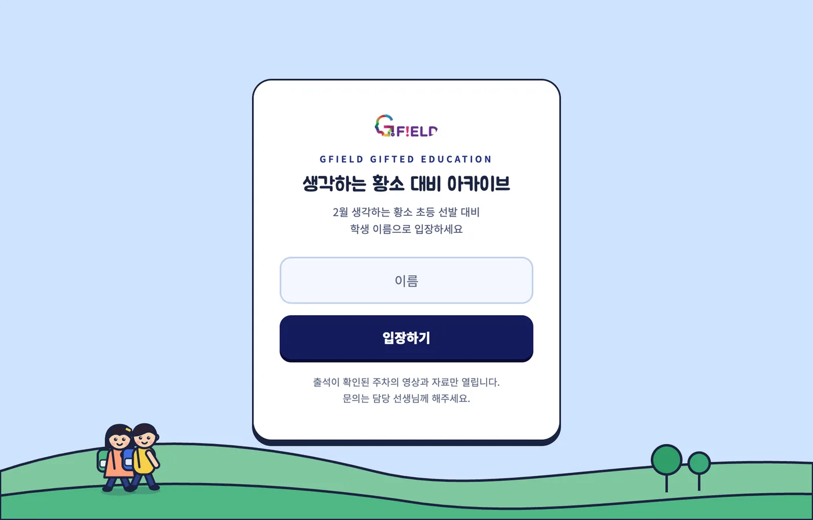
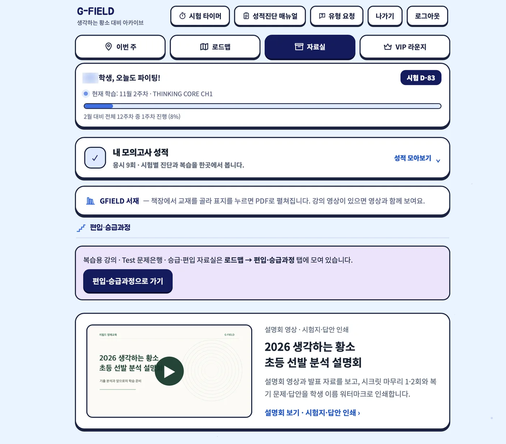
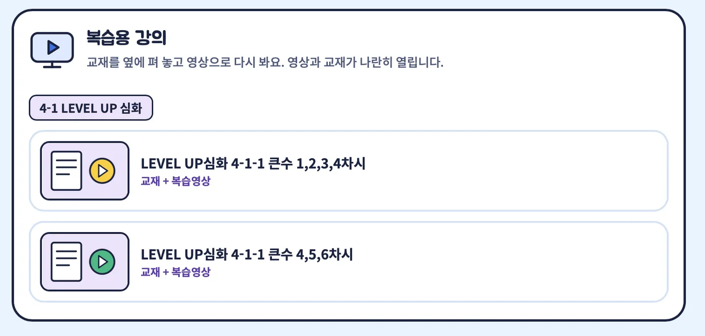
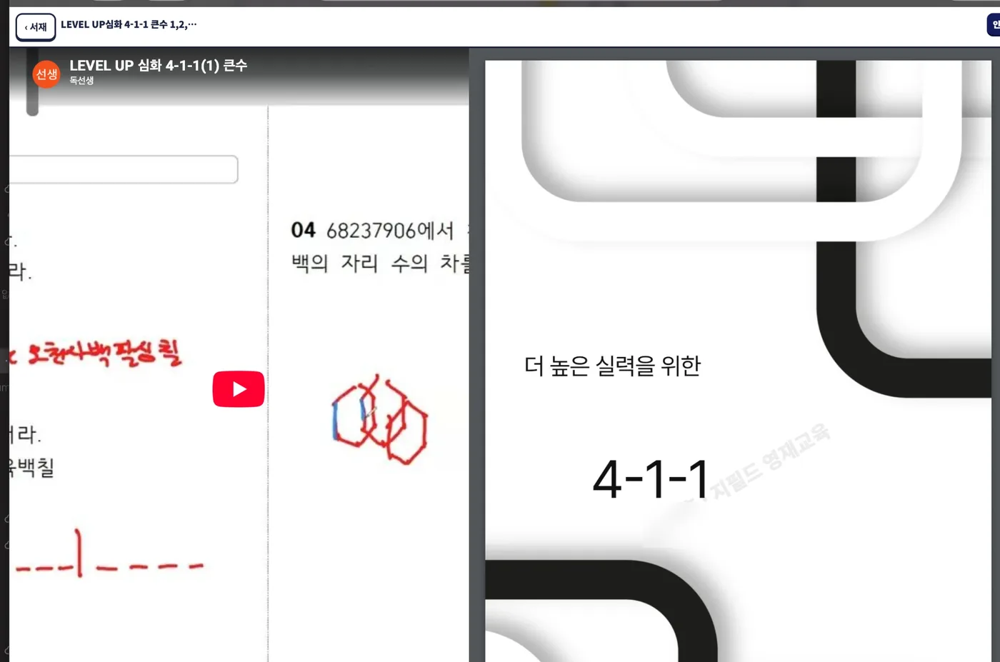
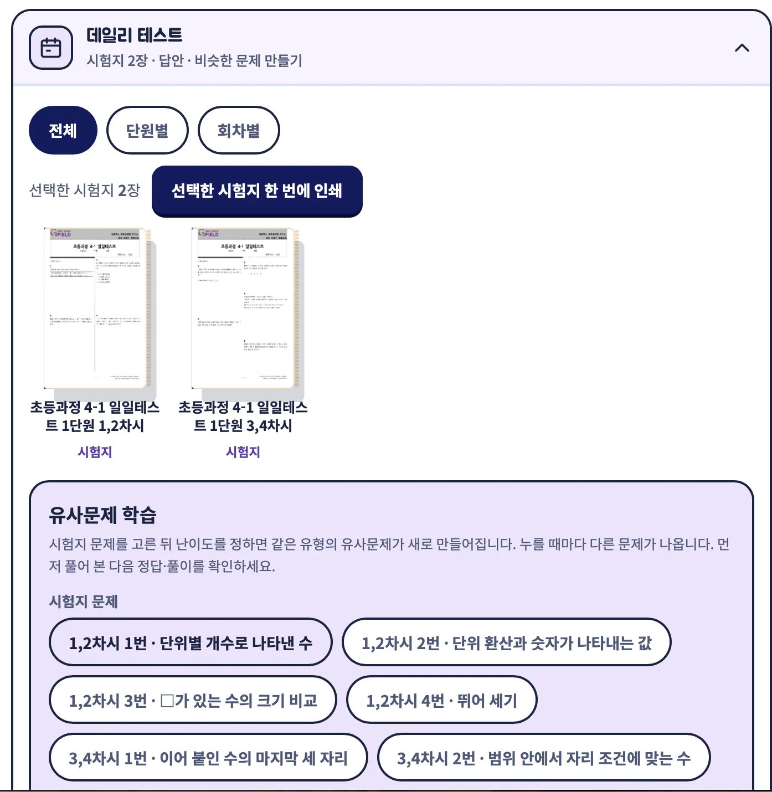
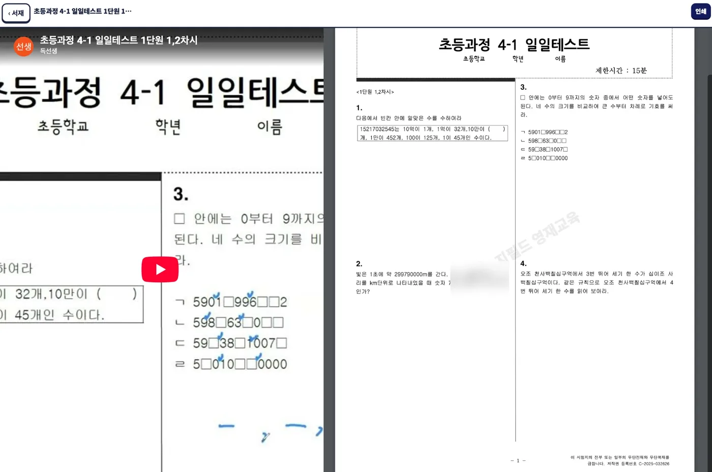
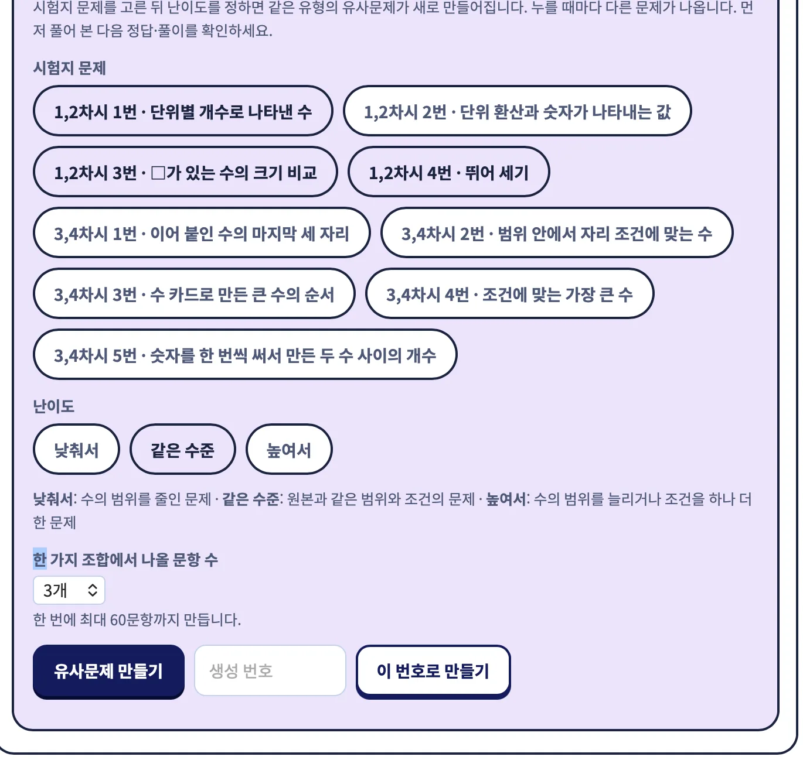
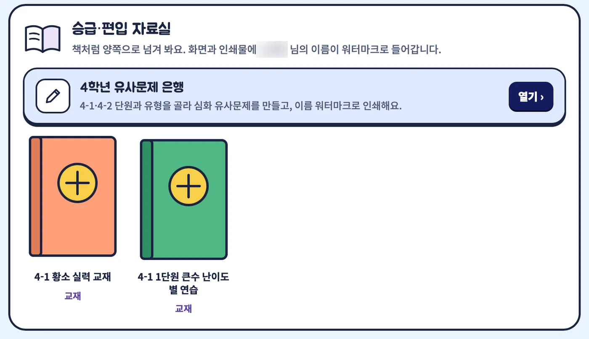
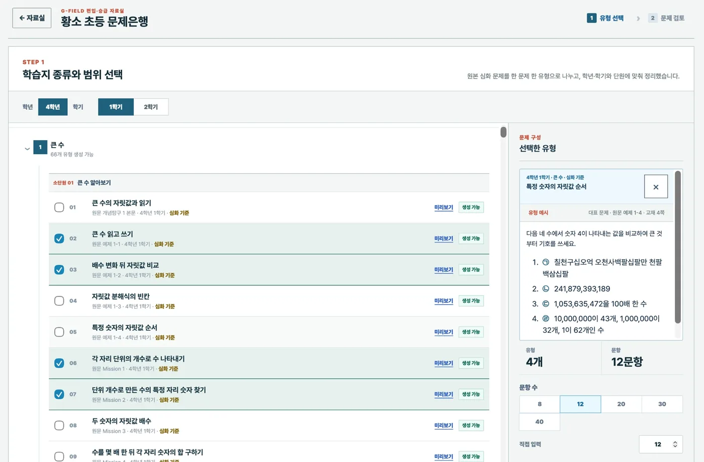

← 자료실로
편입·승급 아카이브 사용법
편입·승급 회원이 아카이브에서 강의, 시험지, 교재를 찾아 쓰는 순서입니다.
1로그인
- 이름 칸에 학생 이름을 씁니다.
- 「입장하기」를 누릅니다.

로그인 화면
2자료실에서 편입·승급과정 열기
- 위쪽 메뉴에서 「자료실」을 누릅니다.
- 보라색 상자의 「편입·승급과정으로 가기」를 누릅니다.

자료실 → 편입·승급과정
「로드맵」 메뉴의 「편입·승급과정」 탭으로도 들어갈 수 있습니다.
3복습용 강의
강의 줄을 누르면 왼쪽에 영상, 오른쪽에 교재가 나란히 열립니다. 교재에는 내 이름 워터마크가 들어갑니다.

강의 목록

영상과 교재가 나란히
4데일리 테스트
- 「데일리 테스트」 상자를 눌러 펼칩니다.
- 시험지를 누르면 해설 영상과 시험지가 나란히 열립니다.
- 「선택한 시험지 한 번에 인쇄」로 여러 장을 한 번에 인쇄할 수 있습니다.
- 아래 「유사문제 학습」에서 시험지 문제와 난이도(낮춰서·같은 수준·높여서)를 고르고 「유사문제 만들기」를 누릅니다.

데일리 테스트 상자

해설 영상과 시험지

비슷한 문제 만들기
풀어 본 뒤에 정답·풀이를 확인하세요. 누를 때마다 다른 문제가 나옵니다.
5승급·편입 자료실
책 표지를 누르면 책처럼 양쪽으로 펼쳐집니다. 화면과 인쇄물에 내 이름이 워터마크로 들어갑니다.

승급·편입 자료실
64학년 유사문제 은행
- 승급·편입 자료실 위쪽의 「4학년 유사문제 은행」에서 「열기」를 누릅니다.
- 학기(1학기·2학기)를 고르고 단원을 펼쳐 풀 유형에 체크합니다.
- 오른쪽에서 문항 수(8·12·20·30·40)를 정하고 「문제 구성하기」를 누릅니다.
- 만들어진 문제를 확인하고 인쇄합니다.

유형과 문항 수 고르기